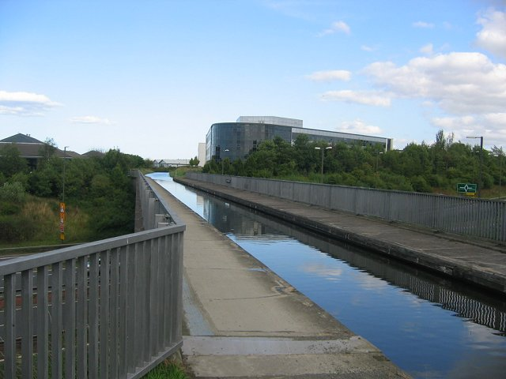

Una ola que viaja sin deshacerse y la ecuación que la explicó
En agosto de 1834, un ingeniero escocés que estudiaba cómo diseñar mejores barcos para canales vio algo que no esperaba: una ola que se desprendió de un bote y siguió avanzando sola por el canal, sin deshacerse. La siguió a caballo durante un par de kilómetros. Tardó más de un siglo en entenderse lo que había visto, y hoy esa ola tiene nombre propio: el solitón.
El ingeniero era John Scott Russell (1808–1882). Según la página que la Universidad Heriot-Watt dedica a su descubrimiento, él mismo lo contó en su «Informe sobre las olas», presentado en la reunión de 1844 de la Asociación Británica para el Avance de la Ciencia [1]. Russell observaba un bote tirado rápidamente por un par de caballos por un canal angosto, cuando el bote se detuvo de golpe [1]:
Después de una persecución de una o dos millas, la perdió en las curvas del canal [1]. Fue, escribió, su «primer encuentro casual» con el fenómeno que llamó la «ola de traslación» [1]. Ocurrió en el Union Canal, en Hermiston, muy cerca de donde hoy está el campus de Heriot-Watt en Edimburgo [1].

Según MacTutor, Russell trabajaba para la compañía del Union Canal, estudiando si convenía usar barcos de vapor en los canales y la relación entre la resistencia al movimiento y la generación de olas [2]. Después de su descubrimiento construyó un tanque de olas en el fondo de su casa e hizo más observaciones [1]. Pero, cuenta MacTutor, los científicos de la época no le creyeron del todo: George Green, George Airy, Philip Kelland y Samuel Earnshaw intentaron describir la ola solitaria sin éxito, y Stokes dudaba de que una ola así pudiera propagarse sin cambiar de forma [2].
Una teoría aproximada correcta llegó con Boussinesq, en 1871, y con Rayleigh, en 1876; pero el problema recién quedó resuelto con el trabajo de Korteweg y de Vries de 1895 [2]. Su ecuación, conocida por sus iniciales como KdV, describe, según el título de su trabajo, el cambio de forma de las olas largas que avanzan por un canal rectangular [3].
Dos defectos que se compensan: en aguas poco profundas, las olas tienden a deformarse de dos maneras opuestas. La dispersión hace que una ola se desparrame, porque sus componentes viajan a distinta velocidad. La no linealidad hace que se empine, porque la parte más alta va más rápido. En una ola solitaria, los dos efectos se equilibran justo, y la ola viaja sin cambiar (una explicación general del mecanismo que estudia la ecuación de Korteweg y de Vries).
Según la página de Heriot-Watt, Russell estuvo convencido toda su vida de que su ola era muy importante, pero los científicos del siglo XIX y de principios del XX pensaban otra cosa [1]. Recién a mediados de la década de 1960, cuando los científicos empezaron a usar computadoras para estudiar la propagación de ondas no lineales, se apreció lo acertado de sus ideas [1]. MacTutor fecha en 1965 el descubrimiento de todo el significado de la ola solitaria [2], que hoy es un ingrediente fundamental de la teoría de los solitones, aplicable a una clase amplia de ecuaciones no lineales [2].
Russell veía la ola solitaria como una entidad dinámica con muchas propiedades de una partícula [1]. Hoy, dice Heriot-Watt, se la usa para describir ondas en ámbitos que van de la hidrodinámica a la óptica no lineal y los plasmas [1]. En 1995, la universidad hizo una recreación de la ola en el mismo canal [1].
El otro Russell: la fama de Russell en su época no venía de la ola. Fue un arquitecto naval muy influyente: según Heriot-Watt, desarrolló un sistema de diseño de cascos que revolucionó la construcción naval, y diseñó y construyó con Brunel el barco Great Eastern [1]; MacTutor agrega que colaboró con Brunel en los barcos de hierro Great Britain y Great Eastern, y que fue el único responsable del acorazado Warrior [2].
Una tarde de 1834, en un canal de Escocia, John Scott Russell vio una ola que avanzaba sola sin deshacerse, la siguió a caballo y dedicó años a estudiarla. Sus contemporáneos dudaron, Korteweg y de Vries la explicaron en 1895, y recién en la década de 1960 se entendió que esa «ola de traslación» era el primer ejemplo de un solitón, una onda que se comporta casi como una partícula.
Pregunta para la comunidad: Russell dice que la ola avanzaba a unas ocho o nueve millas por hora, unos 3,8 m/s. Con la velocidad de las olas en aguas someras, c = √(gH), ¿qué profundidad tendría que tener el canal para que una ola corriente fuera así de rápida?